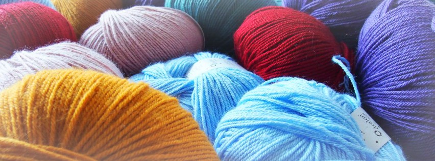
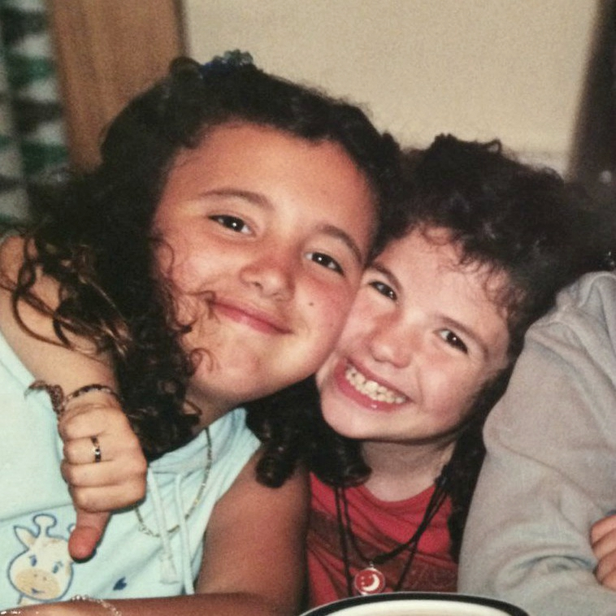
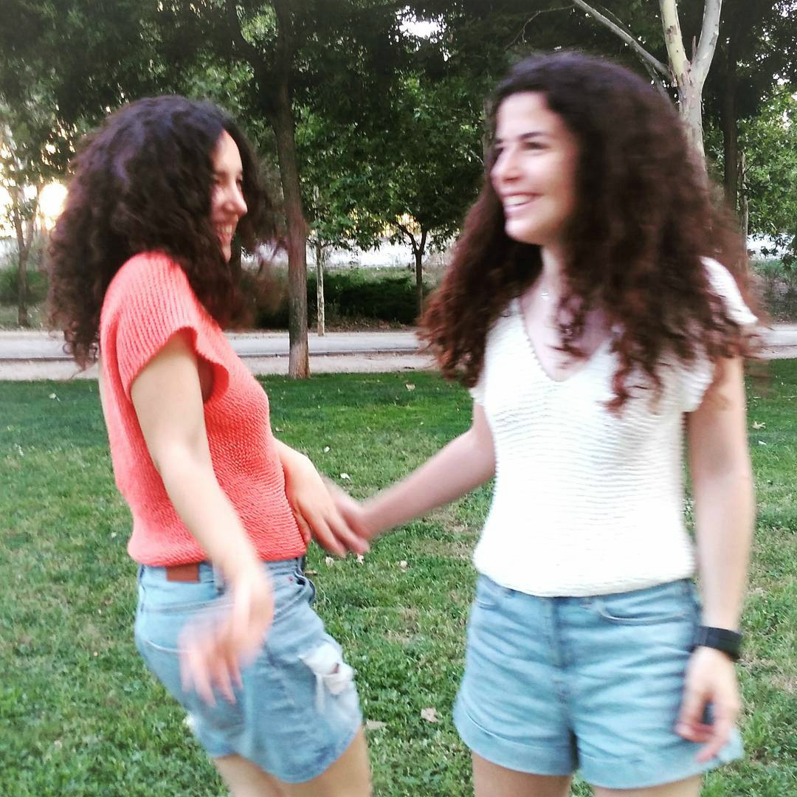

¡Conócenos!
 ¡Hola! Antes de nada, nos gustaría presentarnos.
Somos Isa y Raquel, hermanas. Pero no somos las típicas hermanas que se quieren desde la distancia, que comparten el tiempo que requieren las obligaciones familiares y poco más. No, a pesar de los 4 años de edad que nos separan y de las notables diferencias en nuestras personalidades, siempre hemos sido las hermanas que comparten experiencias, amigos y aficiones, hemos sido inseparables.
Aunque en algunos momentos hayamos tomado caminos separados, el amor y la conexión que nos unen son innegables, y siempre acabamos encontrándonos. Así ocurrió con nuestros caminos profesionales, pues cada una empezó haciendo una carrera, pero acabamos haciendo el mismo máster y trabajando investigando en informática. Y al mismo tiempo, lo mismo nos pasaba con las artes tejeriles, ya que, cada una por su lado, empezamos a tejer para desconectar. Una empezó con dos agujas, la otra con ganchillo. Poco a poco, hemos ido aprendiendo la una de la otra y haciendo de esto una afición común. Hoy por hoy, cada día hablamos de las ideas que se nos ocurren, los proyectos que tenemos entre manos, los artistas que hemos descubierto o los ovillos que nos hemos comprado. Intentamos reservarnos una tarde a la semana para quedar y tejer, en la que hablamos de nuestras cosas, nos damos feedback mutuamente y nos ayudamos en lo que podemos. ¡Y siempre se nos pasan volando!
 Hemos creado esta web con la intención de compartir nuestro trayecto en esto de crear con cualquiera que esté interesado. Ya hace unos meses que abrimos una cuenta de instagram, pero se nos quedaba corta! Nuestra idea es publicar cada 15 días, compartiendo proyectos, ideas, experiencias y patrones.
Si aún no te has animado a intentar tejer, te recomendamos que lo hagas. Para nosotras, tejer no es sólo una afición, es una especie de meditación, una manera de desconectar de las preocupaciones y centrarte en el presente, una excusa para dejar de mirar la pantalla. Además, es una herramienta estupenda para explorar nuestra creatividad y que resulta en un producto. Te permite coger cualquier idea que tienes en la cabeza y transformarla en algo tangible, algo que puedes ponerte, usar en tu día a día o regalar a alguien importante para decirle que no sólo le regalas tu dinero, también tu tiempo y tu cariño. Y la satisfacción que se siente cuando terminas un proyecto y te sale tal y como lo habías imaginado no tiene precio. Así que prueba, empieza con algo sencillo y, cuando te quieras dar cuenta, no podrás dejarlo :)